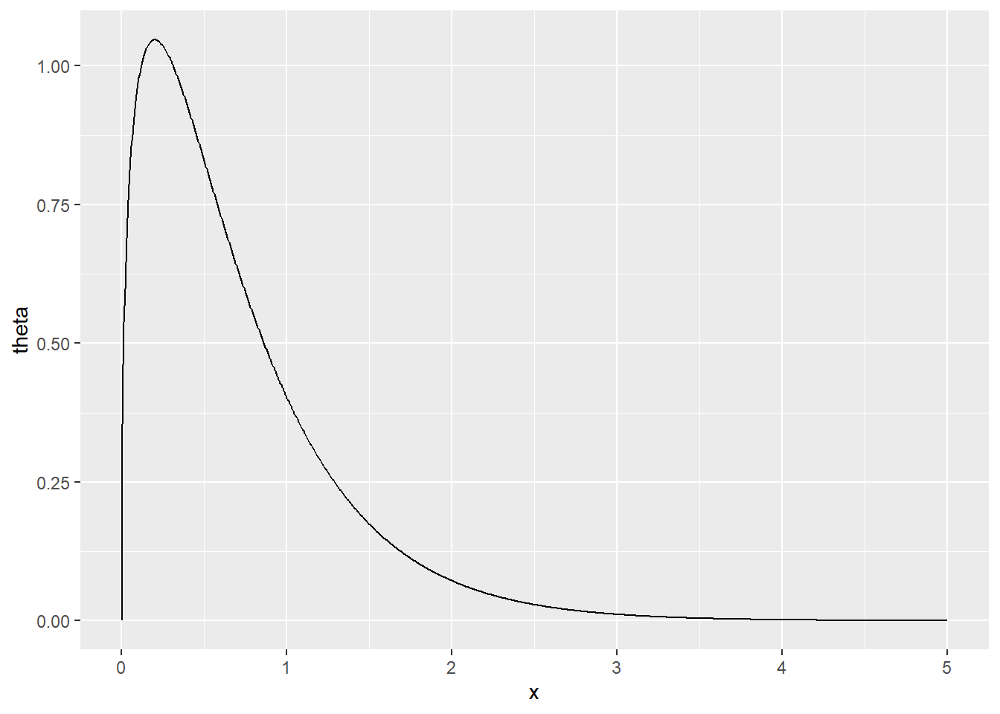
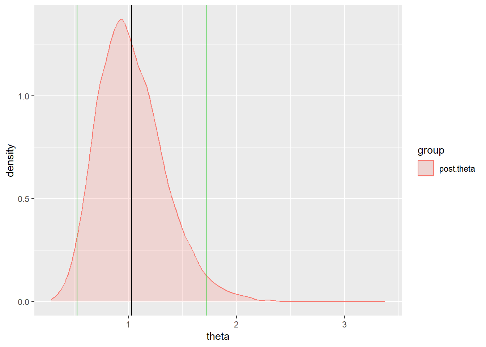

The Weibull distribution is a distribution that is often used for lifetimes of equipment/parts. It actually has two parameters but for the moment let’s assume that one of them is fixed. The Weibull(2) density is
\begin{align*}
f(x|\theta) &= 2\theta x \text{exp}(- \theta x^2) \\
\end{align*}
for x > 0. The parameter \theta is something like the “inverse lifetime” parameter. Large \theta means short lifetimes, while small \theta means long lifetimes. The mean of the distribution is 0.886\theta^{-\frac{1}{2}}. Suppose we observe data x_1,\dots,x_n as independent samples from the Weibull(2) distribution.
1.1 Question 1.1 (8 points)
Show that the Gamma distribution, i.e. Ga(a, b), is the conjugate prior distribution and derive the posterior distribution. Use the p.d.f. \pi(\theta) = \frac{b^a}{\Gamma(a)}\theta^{a-1}\text{exp}(-b\theta).
Derive the marginal distribution \pi(x_1,\dots,x_n). (Hint: There are two related ways to obtain the marginal, through \pi(x_1,\dots,x_n) = \int f(x_1,\dots,x_n|\theta)\pi(\theta) d\theta or \pi(x_1,\dots,x_n) = \frac{f(x_1,\dots,x_n|\theta)}{\pi(\theta|x_1,\dots,x_n)}
For this problem I could not think of a known distribution for the marginal distribution of the sample.
1.3 Question 1.3 (4 points)
In one application, the lifetime of a kind of gear was measured in 1,000 hours. Let x = 1 means the part lasted 1,000 hours and x = 1/2 means the part lasted 500 hours. Gears tend to last between 500 and 5,000 hours, with 1,000 being a typical lifetime. This suggests a Gamma prior distribution for \theta with a = 1.4 and b = 2. Obtain a graph of this prior density and argue that this choice of prior is reasonable given the information provided.
Code
# sim settingT <-1000set.seed(7330)# get density for the domain 0 to 5prior.theta <-dgamma(seq(0,5,length.out = T),shape =1.4,rate =2)library(ggplot2)# plot priordf <-data.frame(x =seq(0,5,length.out = T),prior.theta = prior.theta)ggplot(data = df,aes(x = x,y = prior.theta)) +geom_line() +ylab("theta")

\pi(\theta)
The mean of the prior is 0.7, and if we plug this value into the mean of the weibull(2) 0.886(.7)^{-\frac{1}{2}} = 1.058973 which is in the expected interval. From this it seems that the gamma prior a = 1.4 and b = 2 works well into the expected behavior.
Evidently this gear is fairly typical with lifetimes around 1,000. Find and graph the posterior distribution. Give the posterior mean and variance. Give a 95\% posterior interval for \theta, using both analytical and numerical approaches.
Code
set.seed(7330)# data stats n <-10x <-c(0.25, 0.52, 0.60, 0.91, 0.97, 1.00, 1.07, 1.09, 1.18, 1.38)x2 <- x^2x2. <-sum(x2)# prior settingsa <-1.4b <-2# number of samplesT <-10000# simulate posteriorpost.theta <-rgamma(T,shape = (a+n),rate = (b + x2.)) # calc posterior summary statisticspost.mean <-mean(post.theta)post.var <-var(post.theta)lower.cl <-quantile(post.theta,probs =0.025)upper.cl <-quantile(post.theta,probs =0.975)# graphing posterior with mean and cidf.post.theta <-data.frame(theta = post.theta,group =rep("post.theta",T))ggplot(df.post.theta, aes(x = theta,fill = group,color = group)) +geom_density(alpha=0.2) +geom_vline(xintercept =c(lower.cl,upper.cl),color ="limegreen")+geom_vline(xintercept = post.mean, color ="black")

\pi(\theta|x_1,\dots,x_n)
Code
# creating table for numerical and analytical results of the posterior dist numerical <-c(round(post.mean,5),round(post.var,5),paste("(",round(lower.cl,5),",",round(upper.cl,5),")")) analytical <-c(round((a+n)/(b + x2.),5),round((a+n)/(b + x2.)^2,5),paste("(",round(qgamma(0.025,shape = (a+n),rate = (b + x2.)),5),",",round(qgamma(0.975,shape = (a+n),rate = (b + x2.)),5),")")) table.q1 <-as.data.frame(rbind(numerical,analytical))row.names(table.q1) <-c("Numerical","Analytical")library(kableExtra) knitr::kable(table.q1,booktabs = T,col.names =c("Posterior Mean","Posterior Variance", "95% Credible interval"),caption ="Numerical vs Analytical approaches") %>%kable_styling(latex_options =c("hold_position"))
Numerical vs Analytical approaches
Posterior Mean
Posterior Variance
95% Credible interval
Numerical
1.03152
0.09537
( 0.52734 , 1.72616 )
Analytical
1.0278
0.09266
( 0.52051 , 1.70475 )
2 Problem 2: Change-point model
Consider the following hierarchical change-point model for the number of occurrence Y_i of some event during time interval i:
\begin{align*}
Y_i &\sim \begin{cases} \text{Poi}(\theta) \quad i = 1,\dots, k \\ \text{Poi}(\lambda) \quad i = k+1,\dots, n \end{cases},\\
\end{align*}
with the following prior formulation: \theta \sim Ga(a_1,\beta_1) and \lambda \sim Ga(a_2,\beta_2) with \theta and \lambda independent. We further assume \beta_1 \sim IG(c_1,d_1) and \beta_2 \sim IG(c_2,d_2). The p.d.f.’s of those priors are defined as below:
Fit this model the “coal-data.txt”, which gives counts of coal mining disasters in Great Britain by year from 1851 to 1962, where disaster is defined as an accident resulting in the deaths of 10 or more minors. Set the hyperparameters to be reasonably non-informative to: a_1 = a_2 = 0.5, c_1 = c_2 = 1, and d_1 = d_2 = 1. Assume k = 40 (corresponding to year 1890). Derive full conditional distributions for \theta and \lambda.
Implement a Gibbs sampler to derive the posterior distributions of \theta, \lambda, and R = \theta/\lambda. Provide the histograms and kernel density estimates along with the posterior sample summaries: means, standard deviations, quantiles etc. What is meant by “convergence diagnosis”? Describe some tools you might use to assist in this regard. Present some evidence that the MCMC has reasonably converged.
Convergence diagnostics are steps taken in analyzing the posterior samples and determining if the sequence is stable/stationary/converged to the “true value”. Some options to determine whether sample estimates have not converged are:
look at a trace plot individually and jointly,
create multiple chains with different initial values and observe if all the chains converge to same value,
look at the autocorrelation if low autocorrelation then speed of mixing is fast and see if auto correlation drops over time if not this is an indicator that converge may be an issue or will be slow,
you can also use different statistical test such as Geweke statistic, Gelman-Rubin Statistic.
Below we can see that comparing the trace plots of four chains with different starting values that they all converge to around the same value, so this indicates that there is no obvious convergence issues. The joint trace plot of \theta and \lambda also does not indicate that there are any convergence issues. The acf of each of the sequences drops really fast, so this indicates that there are no obvious mixing issues and fast movement in the parameter space. From each of these findings there seems to be no indication of convergence issues.
Now assume that k is unknown and adopt the following prior:
\begin{align*}
k &\sim \text{Discrete-Unif}(1,n),\\
\end{align*}
which should be independent of \theta and \lambda. Now add k into the sampling chain, and obtain the marginal posterior density estimate for it. What is the effect on the posterior for R = \theta/\lambda?
I could not find a common distribution for this marginal distribution of k.
To implement this prior on k I implemented a metropolis hastings step to draw k. I used the discrete uniform distribution as the proposal distribution. The acceptance rate is not the best around 5%, but it seems to work well.
I did not notice too much difference in the distribution/histograms of R after introduction k as unknown. The posterior summaries also do not change by any very noticeable difference, so the introduction as k as an unknown parameter did not effect the posterior of R very much. (Table 2 and Table 3)
Now replace the third-stage priors given above with, \beta_1 \sim Ga(c_1,d_1) and \beta_2 \sim Ga(c_2,d_2) with \beta_1 and \beta_2 being independent, thus destroying the conjugacy for these two conditionals. Resort to a Metropolis Hastings subsampling for these two components instead, using the following hyperparameter values c_1 = c_2 = 1 and d_1 = d_2 = 100. What is the effect on the posterior distribution for \beta_1 and \beta_2. For R = \theta/\lambda? For k?
The posterior distributions of \beta_1 and \beta_2 are both much narrower that in the previous sampling setting, and noticeably lower parameter estimates. One thing to note is that to me it looks like both \beta_1 and \beta_2 are not converging, so this may impact any inferences done on these two parameters. I tried different proposal distributions and different sampling settings, but could not achieve any noticeable convergence. This may indicate that I have derived my posterior incorrectly, but I could not figure out where the issue is. The histograms are more bell shaped than before using the inverse gamma prior.
For the effect on R =\theta/\lambda the coverage is slightly narrower, but other than that there is not too much change from table 3 to table 4 and the histograms. This may be a part of the convergence issue of \beta_1 and \beta_2 or this may indicate that the prior choice of \beta_1 and \beta_2 has minimal change in the posterior estimates of R.
For the effect on k the range is slightly larger, but the median and coverage does not change. There is a slightly lower posterior mean for k. Overall, there seems to be little effect on the posterior of k using that improper prior Gamma for \beta_1 and \beta_2 again there may be some issues because of the convergence problem of \beta_1 and \beta_2.
The calculated Bayes Factor is 0.42017 this indicates that model 1 H_1 may be a better model for the data.
3.4 Question 3.4 (10 points)
We now replace the prior distribution by improper constant priors: \pi(\beta_1) = \pi(\beta_2) = c_1 in model H_1 and \pi(\gamma_1) = \pi(\gamma_2) = \pi(\gamma_3) = c_2 in model H_2. We can still obtain the marginal distributions and define a Bayes factor. Show that the value of the Bayes factor depends on both c_1 and c_2.